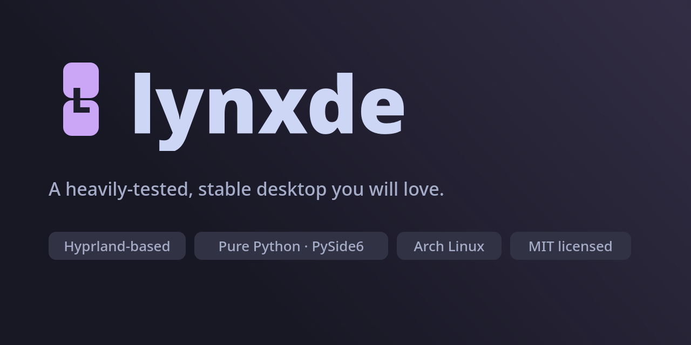
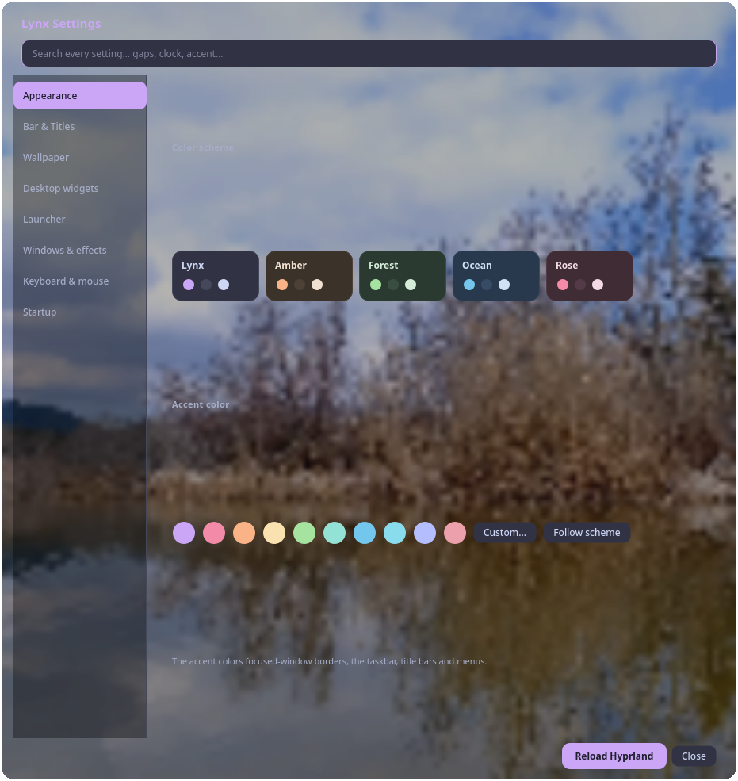
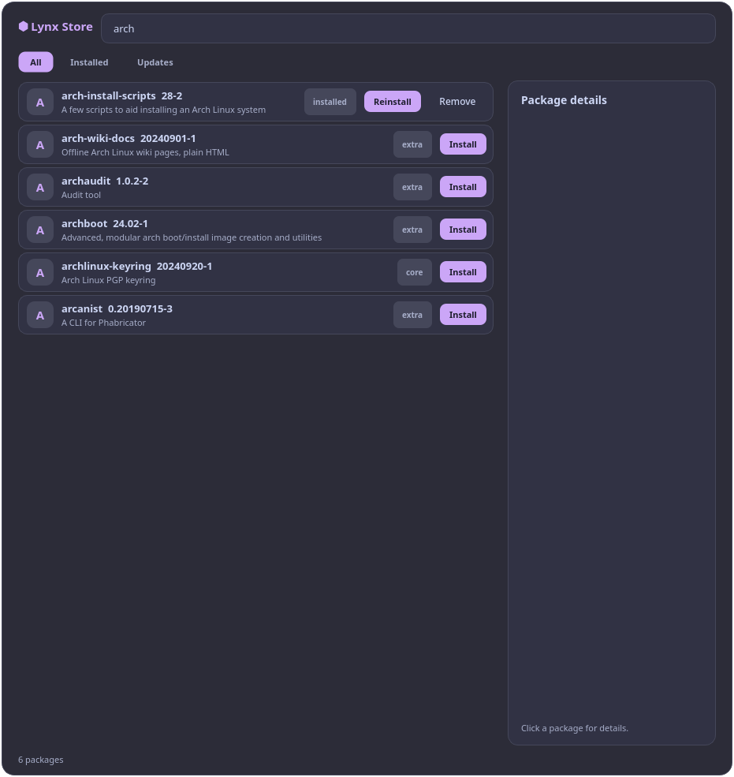
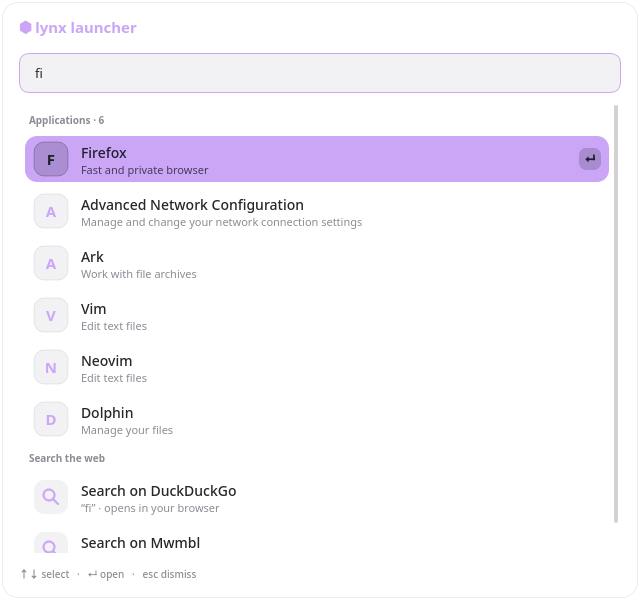

A modern desktop environment you will love. Built on its own compositor, designed for speed and safety.



LWP — the Lynx Window Protocol — handles tiling, input, and rendering natively. No Hyprland or Sway required.
Every component is Python + PySide6. No C extensions, no external dependencies. Readable and hackable.
Change color schemes, gaps, blur, wallpaper, widgets — everything applies instantly. No restart needed.
Press SUPER + / to search apps, packages, and the web from one place.
Browse, install, and remove pacman packages without leaving the desktop. Powered by Lynx Store.
Lynx, Amber, Forest, Ocean, and Rose — plus custom accent colors. Restyle the whole session in one click.
Clock and OpenStreetMap tiles on the background layer. Configurable position and visibility.
Checks GitHub every 24 hours, downloads and applies updates live. No re-login needed.
After install, select Lynxde from SDDM, GDM, or LightDM. The native LWP compositor starts automatically.
Press SUPER + / to search apps, packages, and the web. Type anything — it searches everything.
Press SUPER + O to open Settings. Change the theme, wallpaper, gaps, blur, widgets — all live.
Type a package name in the palette or run lynx-store to browse, install, and update pacman packages.
| Keybind | Action |
|---|---|
| SUPER + / | Open command palette |
| SUPER + O | Open settings |
| SUPER + X | Close focused window |